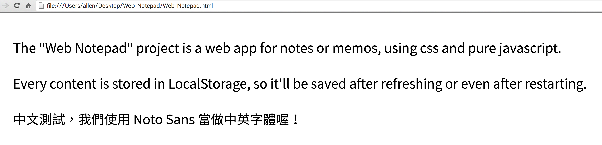

#Web Notepad
The “Web Notepad” project is a web app for notes or memos, using css and pure javascript.
Every content is stored in LocalStorage, so it’ll be saved after refreshing or even after restarting.
##Screenshots

##License
This project is released under MIT License, please read “LICENSE“ for more information.